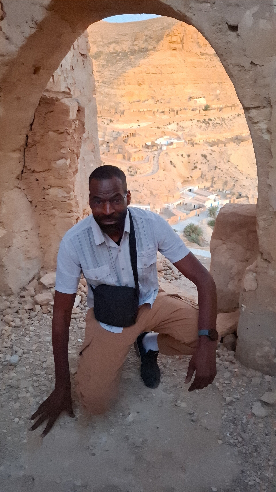
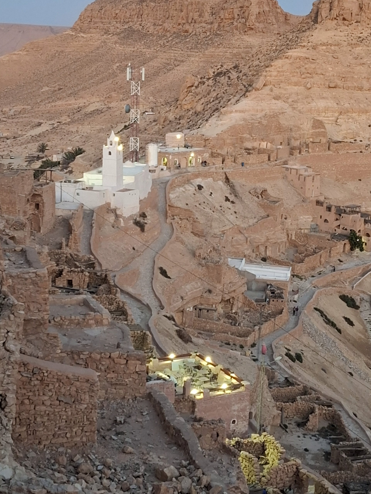
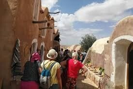
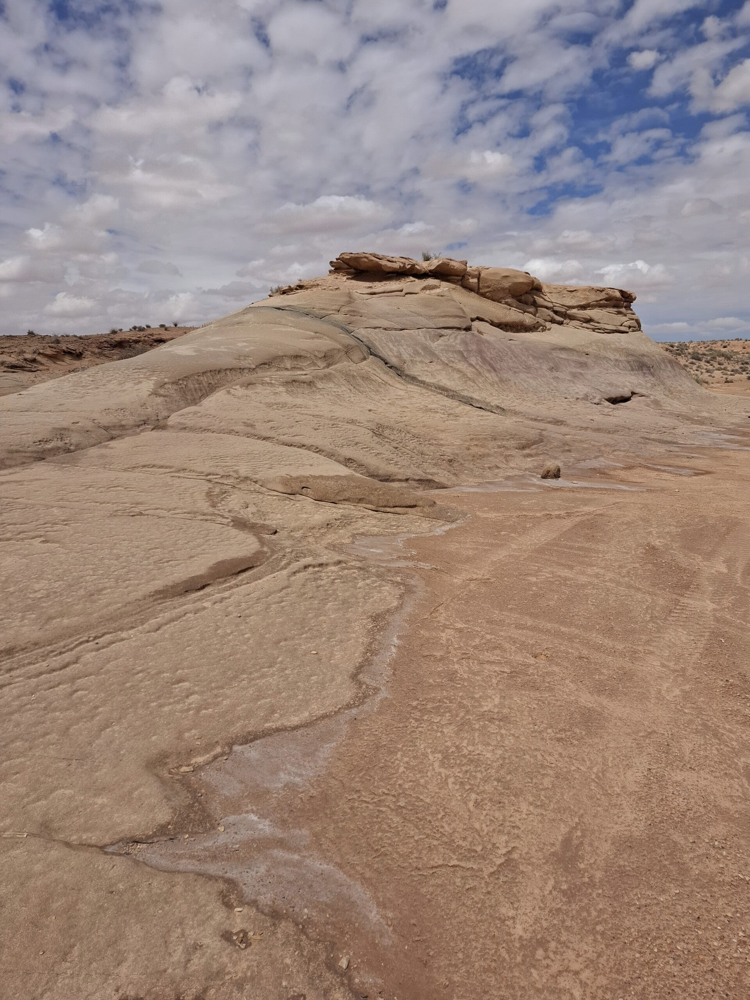

Attractions locales de tataouine
Découvrez pourquoi tataouine offre une expérience touristique unique et inoubliable, riche en histoire, culture et paysages époustouflants.

Ce qui rend tataouine unique
- Architecture troglodyte et ksour : tataouine est célèbre pour ses ksour (pluriel de ksar) : des greniers fortifiés construits par les berbères pour stocker des vivres. certains, comme ksar ouled soltane ou ksar hadada, sont magnifiques, avec leurs cellules superposées en étages, donnant un aspect presque futuriste.
- Paysages lunaires et désertiques : les alentours offrent un décor naturel brut, fait de montagnes arides, de plateaux rocheux, de vallées asséchées — un terrain presque surnaturel, parfait pour l'aventure et la contemplation.
- L'inspiration pour "star wars" : tataouine a directement inspiré george lucas pour nommer la planète "tatooine" dans star wars. plusieurs scènes ont même été tournées non loin de là, ce qui en fait un lieu de pèlerinage pour les fans de science-fiction.
- Culture authentique et traditions berbères : contrairement à des zones touristiques très fréquentées, tataouine reste encore profondément ancrée dans ses traditions : artisanat, gastronomie locale (comme le couscous berbère), tenues traditionnelles... il y a une vraie authenticité.
- Les villages troglodytes : des endroits comme chenini et douiret, perchés sur des collines, montrent des habitations creusées dans la roche. ils racontent des siècles d'histoire d'adaptation aux conditions extrêmes du sud tunisien.
- Le rythme de vie paisible : à tataouine, le temps semble ralentir. c’est un endroit parfait pour ceux qui cherchent à échapper aux circuits touristiques classiques et ressentir un autre rapport au temps et à l'espace.

Trois attractions incontournables
- Chenini
pourquoi c'est incontournable ? chenini, c’est l’âme de tataouine. ce vieux village berbère est à moitié troglodyte : certaines maisons sont creusées directement dans la roche. l’endroit est suspendu sur une montagne, avec une vue incroyable sur toute la vallée désertique. tu sens vraiment l'histoire partout : le village date de plusieurs siècles et il est encore habité par quelques familles.
➔ à ne pas manquer : la mosquée des sept dormants et les ruelles escarpées. - Ksar ouled soltane
pourquoi c'est incontournable ? c’est l’un des ksour les mieux conservés de toute la région. un ksar est un grenier collectif fortifié où les habitants stockaient grains, olives et marchandises pour se protéger des pillards. ksar ouled soltane est tout simplement spectaculaire avec ses cellules empilées en hauteur, formant un labyrinthe de petites pièces en pierre.
➔ fun fact : certaines scènes de star wars: episode i y ont été tournées (c'est ici que vivait "anakin jeune" !). - Douiret
pourquoi c'est incontournable ? moins touristique que chenini, douiret est un ancien village semi-troglodyte encore plus brut, plus sauvage. se promener là-bas, c’est comme marcher dans un décor oublié du monde : vieilles maisons, anciennes mosquées, sentiers battus...
➔ bonus : tu peux facilement faire une petite randonnée autour pour découvrir de superbes panoramas désertiques.

Immersion culturelle à tataouine
- 🧑🌾 Passer du temps avec les habitants
ne pas se contenter d'une visite rapide : prends le temps de discuter avec les gens du coin, surtout à chenini, douiret ou dans les petits marchés de tataouine ville. beaucoup de berbères locaux sont très accueillants et adorent raconter l’histoire de leurs villages, parfois autour d’un thé à la menthe maison. - 🥘 Participer à un repas traditionnel
essaie de manger dans des petites maisons d’hôtes ou chez l’habitant. ils te proposeront souvent des plats traditionnels comme : couscous berbère (plus rustique et parfumé que ce qu'on trouve ailleurs), chorba (soupe épicée), pain cuit dans la cendre (un vrai régal !). tu peux aussi apprendre comment ils préparent leur pain ou leurs pâtisseries locales (comme les makroudhs). - 🎨 S’initier à l’artisanat local
tataouine est réputée pour ses tapis berbères faits main et ses poteries. il y a parfois des ateliers où tu peux apprendre à tisser ou à fabriquer un petit objet traditionnel. - 🐫 Faire une balade avec un guide local
certains anciens du village proposent des randonnées guidées (parfois même en dromadaire). c’est l’occasion d’entendre les légendes, les histoires de batailles, ou les coutumes expliquées par ceux qui vivent là. - 🎶 Assister à une fête ou un événement traditionnel (si tu as de la chance)
parfois, il y a des mariages berbères ou des petits festivals où tu peux voir des danses traditionnelles (comme la Dabka) ou écouter de la musique locale (avec des tambours bendir). même sans événement particulier, certains cafés accueillent des musiciens en soirée.

Conseils pour une visite optimale
- 🕰️ Meilleurs moments pour visiter
- saison idéale : ➔ mars à mai (printemps) ou octobre à novembre (automne).
→ le climat est doux : pas trop chaud le jour, frais la nuit.
→ l’été (Juin-Août), il peut faire très chaud (jusqu'à 45°c 🥵), donc à éviter si tu veux randonner. - moment de la journée : matin tôt (7h-10h) : idéal pour explorer sans la chaleur et profiter de la lumière douce pour les photos. fin d’après-midi (17h-coucher du soleil) : la lumière dorée sur les montagnes et les ksour est magique ✨.
- saison idéale : ➔ mars à mai (printemps) ou octobre à novembre (automne).
- 👀 Eléments à ne surtout pas manquer
- à Chenini : ➔ monter jusqu'à la mosquée blanche des sept dormants pour la vue panoramique. ➔ flâner dans les ruelles abandonnées, entre les vieilles portes en bois et les maisons troglodytes.
- à ksar Ouled Soltane : ➔ grimpe dans les étages supérieurs pour avoir une vue d'ensemble sur l'architecture du ksar. ➔ cherche les cellules en forme d'alvéoles : elles sont super photogéniques.
- à Douiret : ➔ visiter les anciennes mosquées creusées dans la roche. ➔ balader autour pour découvrir les anciens puits et citernes berbères.
- 🎒 Conseils pratiques
chaussures : prends de bonnes chaussures de marche, même pour les villages (ça grimpe parfois !). eau : toujours avoir une bouteille d’eau sur toi. même au printemps, le soleil tape vite. protection solaire : casquette, lunettes de soleil, crème solaire obligatoires. appareil photo : prépare-toi à avoir la carte mémoire pleine — les paysages sont ultra photogéniques ! respect des lieux : certains sites sont encore utilisés par les locaux (surtout les mosquées), donc habille-toi de manière respectueuse (épaules et jambes couvertes dans les villages). - 💬 Petit truc bonus
si tu veux vivre un moment encore plus unique, planifie une nuit sur place (à Chenini ou Douiret) : → le ciel étoilé est époustouflant car il n’y a quasiment aucune pollution lumineuse 🌌. → et le silence du désert... c’est une expérience inoubliable.